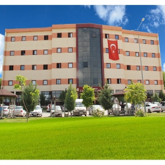
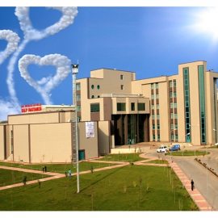
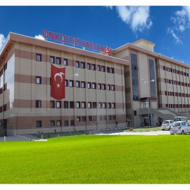
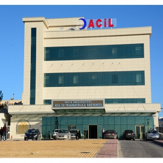

PROFESYONEL BİRİSİNİN YARDIMINA MI İHTİYACINIZ VAR?
Hemen randevu alın ve sağlık sorunlarınızdan kurtulun!!! RANDEVU AL

Çocuk Hastanesi
Dicle Üniversitesi Tıp Fakültesi Hastaneleri sağlık kampüsünde hizmet veren çocuk hastanemiz 120 yatak kapasitesi ile çocuk sağlığı branşlarında hizmet vermektedir.

Kalp Hastanesi
Güneydoğu Anadolu Bölgesinin ilk ve tek Kalp Hastanesi olarak hizmet veren Dicle Üniversitesi Kalp Hastanesi’nde Kardiyoloji, Kalp Damar Cerrahisi ve Çocuk Kardiyoloji

Onkoloji Hastanesi
Bölgenin en büyük kanser teşhis ve tedavi hastanesi olan Onkoloji Hastanemizde Medikal Onkoloji ve Radyasyon Onkolojisi branşlarında, yılda 10 bin kanser hastasının

Acil Hastanesi
Acil ve Travmatoloji Hastanemiz, 11 bin metrekare kapalı alanda 68’i Yoğun Bakım yatağı olmak üzere toplamda 110 yatak ile Türkiye’nin en büyük acil kompleksi olarak